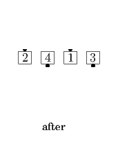
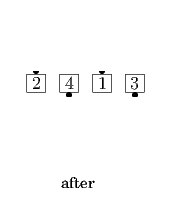

Single File Recycle
From a Single Double Pass Thru: Centers act as Beaus while Ends act as Belles to do a facing Recycle (i.e., Centers Touch and Right-face U-Turn Back as Ends Veer Left to become the Ends of a R-H Wave).
 

© Copyright 2004-2017 Vic Ceder and CALLERLAB Inc., The International Association of Square Dance Callers. Permission to reprint, republish, and create derivative works without royalty is hereby granted, provided this notice appears. Publication on the Internet of derivative works without royalty is hereby granted provided this notice appears. Permission to quote parts or all of this document without royalty is hereby granted, provided this notice is included. Information contained herein shall not be changed nor revised in any derivation or publication.